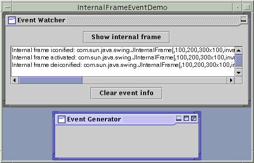

Feedback Form
|
|
Start of Tutorial > Start of Trail > Start of Lesson |
Search
Feedback Form |
AnInternalFrameListeneris similar to aWindowListener. Like the window listener, the internal frame listener listens for events that occur when the "window" has been shown for the first time, disposed of, iconified, deiconified, activated, or deactivated. Before using an internal frame listener, please familiarize yourself with theWindowListenerinterface in How to Write Window Listeners.The application shown in the following figure demonstrates internal frame events. The application listens for internal frame events from the Event Generator frame, displaying a message that describes each event.
 [PENDING: New screenshot forthcoming.]
Here is the internal frame event handling code:
Try this:
- Run InternalFrameEventDemo using JavaTM Web Start. Or, to compile and run the example yourself, consult the example index.
- Bring up the Event Generator internal frame by clicking the Show internal frame button.
You should see an "Internal frame opened" message in the display area.- Try various operations to see what happens. For example, click the Event Generator so that it gets activated. Click the Event Watcher so that the Event Generator gets deactivated. Click the Event Generator's decorations to iconify, maximize, minimize, and close the window.
See How to Write Window Listeners for information on what kinds of events you'll see.public class InternalFrameEventDemo ... implements InternalFrameListener ... { ... public void internalFrameClosing(InternalFrameEvent e) { displayMessage("Internal frame closing", e); } public void internalFrameClosed(InternalFrameEvent e) { displayMessage("Internal frame closed", e); listenedToWindow = null; } public void internalFrameOpened(InternalFrameEvent e) { displayMessage("Internal frame opened", e); } public void internalFrameIconified(InternalFrameEvent e) { displayMessage("Internal frame iconified", e); } public void internalFrameDeiconified(InternalFrameEvent e) { displayMessage("Internal frame deiconified", e); } public void internalFrameActivated(InternalFrameEvent e) { displayMessage("Internal frame activated", e); } public void internalFrameDeactivated(InternalFrameEvent e) { displayMessage("Internal frame deactivated", e); } void displayMessage(String prefix, InternalFrameEvent e) { String s = prefix + ": " + e.getSource(); display.append(s + newline); } public void actionPerformed(ActionEvent e) { if (SHOW.equals(e.getActionCommand())) { ... if (listenedToWindow == null) { listenedToWindow = new JInternalFrame("Event Generator", true, //resizable true, //closable true, //maximizable true); //iconifiable //We want to reuse the internal frame, so we need to //make it hide (instead of being disposed of, which is //the default) when the user closes it. listenedToWindow.setDefaultCloseOperation( WindowConstants.HIDE_ON_CLOSE); listenedToWindow.addInternalFrameListener(this); ... } } ... } }
The InternalFrameListener Interface
The corresponding adapter class is
InternalFrameAdapter.
Method Purpose internalFrameOpened(InternalFrameEvent)Called just after the listened-to internal frame has been shown for the first time. internalFrameClosing(InternalFrameEvent)Called in response to a user request that the listened-to internal frame be closed. By default, JInternalFramehides the window when the user closes it. You can use theJInternalFramesetDefaultCloseOperationmethod to specify another option, which must be eitherDISPOSE_ON_CLOSEorDO_NOTHING_ON_CLOSE(both defined inWindowConstants, an interface thatJInternalFrameimplements). Or by implementing aninternalFrameClosingmethod in the internal frame's listener, you can add custom behavior (such as bringing up dialogs or saving data) to internal frame closing.internalFrameClosed(InternalFrameEvent)Called just after the listened-to internal frame has been disposed of. internalFrameIconified(InternalFrameEvent)
internalFrameDeiconified(InternalFrameEvent)Called just after the listened-to internal frame is iconified or deiconified, respectively. internalFrameActivated(InternalFrameEvent)
internalFrameDeactivated(InternalFrameEvent)Called just after the listened-to internal frame is activated or deactivated, respectively. Each internal frame event method has a single parameter: an
InternalFrameEventInternalFrameEventclass defines no generally useful methods. To get the internal frame that fired the event, use thegetSourcemethod, whichInternalFrameEventinherits fromjava.util.EventObject.
No other source files currently contain internal frame listeners. However, internal frame listeners are very similar toWindowListeners and several Swing programs have window listeners:
Example Where Described Notes InternalFrameEventDemoThis section Reports all internal frame events that occur on one internal frame to demonstrate the circumstances under which internal frame events are fired. DialogDemoText Component Features CustomDialog.javauses
setDefaultCloseOperationinstead of a window listener to determine what action to take when the user closes the window.SliderDemoHow to Use Sliders Listens for window iconify and deiconify events, so that it can stop the animation when the window isn't visible.
|
|
Start of Tutorial > Start of Trail > Start of Lesson |
Search
Feedback Form |
Copyright 1995-2004 Sun Microsystems, Inc. All rights reserved.